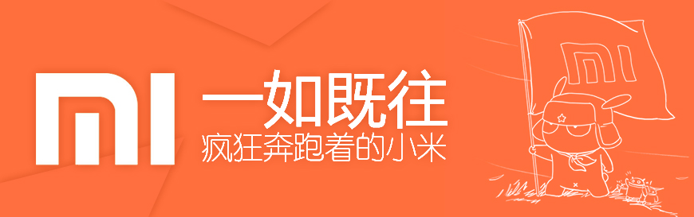

团队扩大： 
1、原谷歌中国研究院副院长林斌担任公司总裁。
3、2015年6月，移动芯片老大高通中国掌门人王翔加盟小米。
企业文化：
小米没有森严的等级，每一位员工都是平等的，每一位同事都是自己的伙伴。
小米崇尚创新、快速的互联网文化。我们讨厌冗长的会议和流程，在轻松的伙伴式工作氛围中发挥自己的创意。
我们相信用户就是驱动力，我们坚持“为发烧而生”的产品理念。
发展历程：
2011年12月18日，小米手机1第一次正式网络售卖。5分钟内30万台售完。
2012年11月19日，中午12点，第二轮MI2 10万台于2分29秒售完，第六轮M1S青春版 30万台于12分02秒售罄。
2013年11月28日，小米公司开放微信专场，15万台小米3手机在十分钟内售罄。
2014年12月14日晚，美的集团发出公告称，已与小米科技签署战略合作协议，小米12.7亿元入股美的集团。
2015年3月18日，微软宣布与小米合作，小米手机4可刷Windows 10系统。
2016年6月1日，小米与微软进一步扩展全球合作伙伴关系，作为合作协议的一部分，小米将在其安卓智能手机和
平板电脑上预装微软Office。